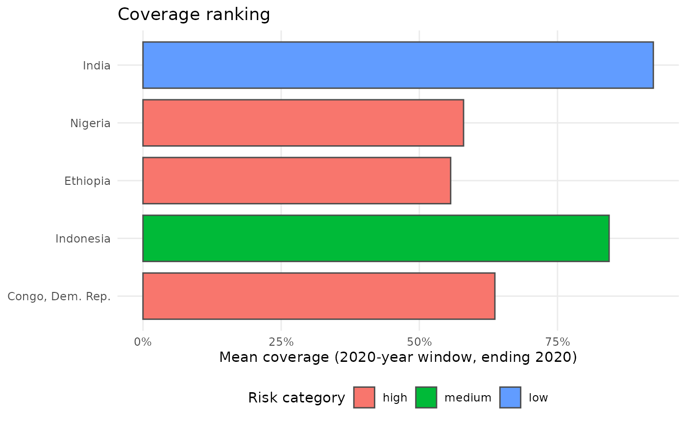
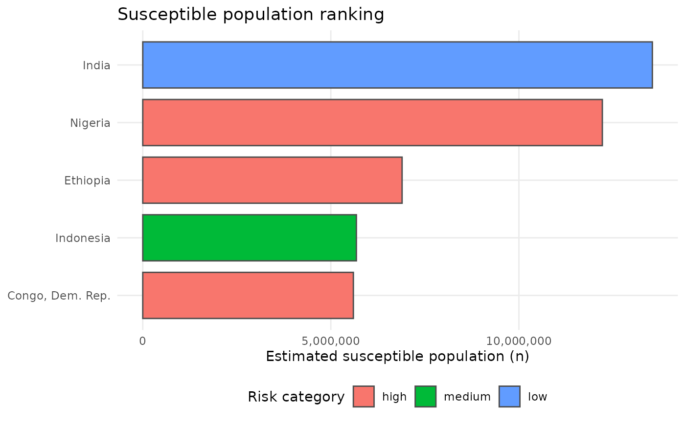
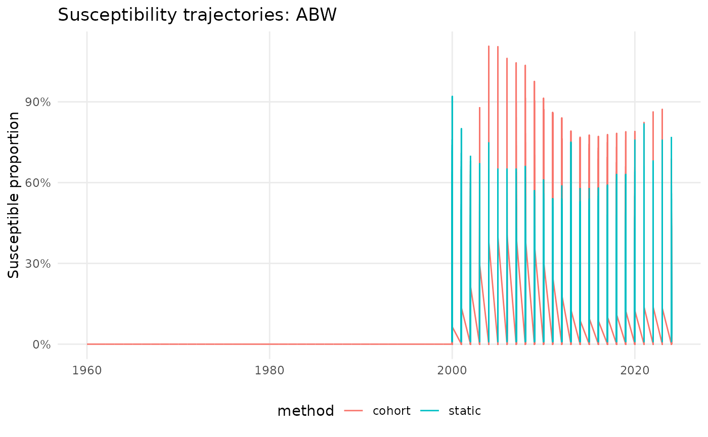

Susceptibility estimates and WHO-style ranking plots
Source:vignettes/susceptibility_simple.Rmd
susceptibility_simple.RmdThis vignette answers a practical first-project question:
Can we identify countries that might be at higher measles outbreak risk by combining recent vaccination coverage with simple susceptibility estimates?
The workflow is:
- Load and inspect a country-year panel.
- Estimate susceptibility (Method A, Method B, and Method D).
- Rank countries using recent coverage and current susceptibility.
- Interpret how method choice changes the ranking.
How the key functions fit together:
-
vpdsus_example_panel(): provides a reproducible teaching dataset. -
panel_validate(): checks that required columns/ranges are sane. -
estimate_susceptible_*(): computes susceptibility under different assumptions. -
risk_rank(): combines recent coverage + susceptibility into a prioritisation table. -
plot_coverage_rank()/plot_susceptible_rank(): communicate results quickly.
1) Load and inspect panel data
library(vpdsus)
panel <- vpdsus_example_panel()
head(panel)
#> # A tibble: 6 × 15
#> iso3 year ind_mcv2 ind_whs3_62 ind_whs8_110 coverage mcv2 cases pop_total
#> <chr> <int> <int> <dbl> <int> <dbl> <int> <dbl> <dbl>
#> 1 ABW 1960 NA NA NA NA NA NA 54922
#> 2 ABW 1961 NA NA NA NA NA NA 55578
#> 3 ABW 1962 NA NA NA NA NA NA 56320
#> 4 ABW 1963 NA NA NA NA NA NA 57002
#> 5 ABW 1964 NA NA NA NA NA NA 57619
#> 6 ABW 1965 NA NA NA NA NA NA 58190
#> # ℹ 6 more variables: pop_0_4 <dbl>, pop_5_14 <dbl>, births <dbl>,
#> # country <chr>, who_region <chr>, who_region_name <chr>Before modelling, validate basic schema and ranges:
v <- panel_validate(panel)
v$ok
#> [1] TRUE
v$diagnostics
#> # A tibble: 1 × 4
#> n_rows n_iso3 year_min year_max
#> <int> <int> <int> <int>
#> 1 17419 272 1960 2024
v$issues
#> # A tibble: 0 × 1
#> # ℹ 1 variable: issue <chr>Check key variables used below:
dplyr::summarise(
panel,
n_rows = dplyr::n(),
n_countries = dplyr::n_distinct(iso3),
year_min = min(year),
year_max = max(year),
coverage_min = min(coverage, na.rm = TRUE),
coverage_max = max(coverage, na.rm = TRUE),
births_min = min(births, na.rm = TRUE),
births_max = max(births, na.rm = TRUE),
cases_min = min(cases, na.rm = TRUE),
cases_max = max(cases, na.rm = TRUE)
)
#> # A tibble: 1 × 10
#> n_rows n_countries year_min year_max coverage_min coverage_max births_min
#> <int> <int> <int> <int> <dbl> <dbl> <dbl>
#> 1 17419 272 1960 2024 0.08 0.99 76.6
#> # ℹ 3 more variables: births_max <dbl>, cases_min <dbl>, cases_max <dbl>2) Susceptibility methods and assumptions
Method A: static coverage-based susceptibility
Function: [estimate_susceptible_static()]
Core idea:
- susceptible proportion is approximately
1 - (coverage * VE). - susceptible count is this proportion multiplied by a population denominator.
In this vignette we use:
-
coverageas the immunisation proportion, -
pop_0_4as the denominator for a simple child-age signal, -
VE = 1(default) for a minimal didactic example.
sA <- estimate_susceptible_static(
panel,
coverage_col = "coverage",
pop_col = "pop_0_4"
)
head(dplyr::select(sA, iso3, year, susceptible_prop, susceptible_n, method))
#> # A tibble: 6 × 5
#> iso3 year susceptible_prop susceptible_n method
#> <chr> <int> <dbl> <dbl> <chr>
#> 1 ABW 1960 NA NA static
#> 2 ABW 1961 NA NA static
#> 3 ABW 1962 NA NA static
#> 4 ABW 1963 NA NA static
#> 5 ABW 1964 NA NA static
#> 6 ABW 1965 NA NA staticMethod B: cohort reconstruction from births and coverage
Function: [estimate_susceptible_cohort()]
Core idea:
- reconstruct the recent birth cohorts that make up an age window (default 0-4),
- for each cohort, count births not effectively immunised,
- aggregate across the window and divide by the age-group population.
Equation for year y with
years_back = 4:
S_n(y) = sum_{k=0..4} births(y-k) * (1 - coverage(y-k))S_prop(y) = S_n(y) / pop_0_4(y)
So Method B explicitly answers: “How many children currently aged 0-4 likely remained susceptible, given their birth cohort sizes and the coverage observed when each cohort was vaccinated?”
Method B walkthrough (single country, step by step)
To make the logic concrete, we take one country and one year and rebuild the cohort sum by hand.
demo_candidates <- panel |>
dplyr::filter(!is.na(coverage), !is.na(births), !is.na(pop_0_4)) |>
dplyr::count(iso3, name = "n_years") |>
dplyr::filter(n_years >= 5) |>
dplyr::arrange(dplyr::desc(n_years))
iso_demo <- demo_candidates$iso3[[1]]
year_demo <- panel |>
dplyr::filter(iso3 == iso_demo, !is.na(coverage), !is.na(births), !is.na(pop_0_4)) |>
dplyr::summarise(year_demo = max(year)) |>
dplyr::pull(year_demo)
cohort_tbl <- panel |>
dplyr::filter(iso3 == iso_demo, year %in% (year_demo - 4):year_demo) |>
dplyr::arrange(year) |>
dplyr::transmute(
iso3,
year,
births,
coverage,
susceptible_from_cohort = births * (1 - coverage)
)
cohort_tbl
#> # A tibble: 5 × 5
#> iso3 year births coverage susceptible_from_cohort
#> <chr> <int> <dbl> <dbl> <dbl>
#> 1 AFG 2019 1405901. 0.57 604537.
#> 2 AFG 2020 1429964. 0.57 614884.
#> 3 AFG 2021 1453695. 0.51 712311.
#> 4 AFG 2022 1462664. 0.56 643572.
#> 5 AFG 2023 1469032. 0.55 661065.Manual Method B numerator for this example year:
manual_s_n <- sum(cohort_tbl$susceptible_from_cohort, na.rm = TRUE)
manual_s_n
#> [1] 3236369Compare manual reconstruction with package output:
sB <- estimate_susceptible_cohort(
panel,
coverage_col = "coverage",
births_col = "births",
pop_col = "pop_0_4"
)
head(dplyr::select(sB, iso3, year, susceptible_prop, susceptible_n, method))
#> # A tibble: 6 × 5
#> iso3 year susceptible_prop susceptible_n method
#> <chr> <int> <dbl> <dbl> <chr>
#> 1 ABW 1960 0 0 cohort
#> 2 ABW 1961 0 0 cohort
#> 3 ABW 1962 0 0 cohort
#> 4 ABW 1963 0 0 cohort
#> 5 ABW 1964 0 0 cohort
#> 6 ABW 1965 0 0 cohort
sB_demo <- sB |>
dplyr::filter(iso3 == iso_demo, year == year_demo) |>
dplyr::select(iso3, year, susceptible_n, susceptible_prop)
manual_check <- panel |>
dplyr::filter(iso3 == iso_demo, year == year_demo) |>
dplyr::transmute(
iso3,
year,
pop_0_4,
manual_susceptible_n = manual_s_n,
manual_susceptible_prop = manual_s_n / pop_0_4
) |>
dplyr::left_join(sB_demo, by = c("iso3", "year"))
manual_check
#> # A tibble: 1 × 7
#> iso3 year pop_0_4 manual_susceptible_n manual_susceptible_p…¹ susceptible_n
#> <chr> <int> <dbl> <dbl> <dbl> <dbl>
#> 1 AFG 2023 5973106. 3236369. 0.542 3236369.
#> # ℹ abbreviated name: ¹manual_susceptible_prop
#> # ℹ 1 more variable: susceptible_prop <dbl>On a large global panel this method is often much more informative than Method A, because it uses cohort size and birth-history dynamics directly rather than only current coverage.
Method D: case-balance recurrence with reporting fraction rho
Function: [estimate_susceptible_case_balance()]
Core recurrence (discrete-time):
S[t+1] = max(0, S[t] + births[t] - vaccinated[t] - cases[t] / rho)
Interpretation:
- lower
rhomeans more under-reporting and therefore larger implied depletion from infection for the same observed cases.
sD <- estimate_susceptible_case_balance(
panel,
rho = c(0.2, 0.5, 1),
coverage_col = "coverage",
births_col = "births",
cases_col = "cases",
pop_col = "pop_total",
age_group = "total"
)
head(dplyr::select(sD, iso3, year, rho, susceptible_prop, susceptible_n, method))
#> # A tibble: 6 × 6
#> iso3 year rho susceptible_prop susceptible_n method
#> <chr> <int> <dbl> <dbl> <dbl> <chr>
#> 1 ABW 1960 0.2 0.0320 1760. case_balance
#> 2 ABW 1961 0.2 NA NA case_balance
#> 3 ABW 1962 0.2 NA NA case_balance
#> 4 ABW 1963 0.2 NA NA case_balance
#> 5 ABW 1964 0.2 NA NA case_balance
#> 6 ABW 1965 0.2 NA NA case_balanceChoosing a method for a first project:
- Start with Method A to understand the workflow quickly.
- Move to Method B when births and cohort structure matter.
- Use Method D when reported cases are considered informative about depletion.
3) Rank countries and produce WHO-style outputs
The ranking helper [risk_rank()] combines:
- recent mean coverage over a window (
window_years), and - susceptibility at a target end year (
year_end).
rank_A <- risk_rank(panel, sA, window_years = 3, year_end = 2020)
rank_B <- risk_rank(panel, sB, window_years = 3, year_end = 2020)
head(dplyr::select(rank_A, iso3, coverage_mean, susceptible_prop, risk_category))
#> # A tibble: 6 × 4
#> iso3 coverage_mean susceptible_prop risk_category
#> <chr> <dbl> <dbl> <fct>
#> 1 IND 0.923 0.11 low
#> 2 NGA 0.58 0.4 high
#> 3 ETH 0.557 0.43 high
#> 4 IDN 0.843 0.24 medium
#> 5 COD 0.637 0.38 high
#> 6 PAK 0.81 0.17 mediumPlots:
plot_coverage_rank(rank_A, top_n = 5)
plot_susceptible_rank(rank_A, top_n = 5)
4) How method choice affects interpretation
Compare trajectories for one country:
compare_methods(
panel = panel,
estimates = list(
static = sA,
cohort = sB
),
iso3 = panel$iso3[[1]]
)
#> Warning: Removed 10682 rows containing missing values or values outside the scale range
#> (`geom_line()`).
Simple side-by-side ranking comparison:
dplyr::left_join(
dplyr::mutate(
dplyr::select(rank_A, iso3, risk_A = risk_category, susc_A = susceptible_prop),
year_end = attr(rank_A, "year_end")
),
dplyr::mutate(
dplyr::select(rank_B, iso3, risk_B = risk_category, susc_B = susceptible_prop),
year_end = attr(rank_B, "year_end")
),
by = c("iso3", "year_end")
)
#> # A tibble: 272 × 6
#> iso3 risk_A susc_A year_end risk_B susc_B
#> <chr> <fct> <dbl> <dbl> <fct> <dbl>
#> 1 IND low 0.11 2020 low 0.0892
#> 2 NGA high 0.4 2020 high 0.536
#> 3 ETH high 0.43 2020 high 0.509
#> 4 IDN medium 0.24 2020 medium 0.136
#> 5 COD high 0.38 2020 high 0.472
#> 6 PAK medium 0.17 2020 medium 0.238
#> 7 BRA low 0.21 2020 low 0.109
#> 8 AFG high 0.43 2020 high 0.463
#> 9 PHL medium 0.21 2020 medium 0.175
#> 10 YEM high 0.47 2020 high 0.549
#> # ℹ 262 more rowsTake-home interpretation
- Method A is the easiest baseline and useful for quick screening.
- Method B adds births/cohort structure and is usually more epidemiologically interpretable for child susceptibility.
- Method D introduces case-driven depletion and a reporting parameter
(
rho), bridging towards mechanistic inference.